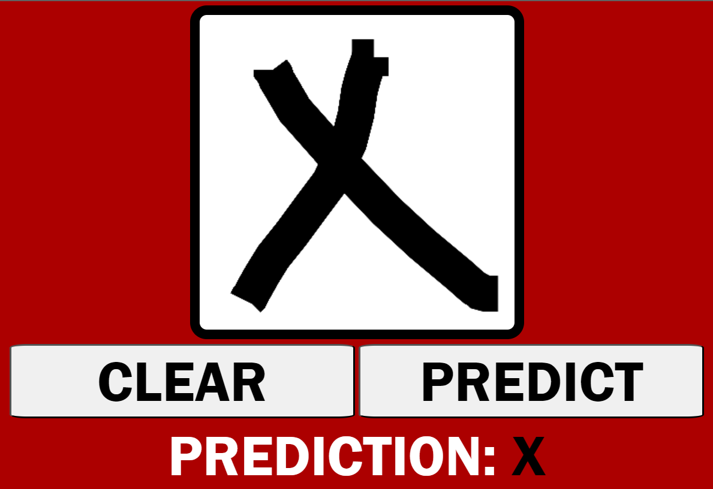

Projects
RN Drum Sequencer
RN Drum Sequencer is an open-source project to produce a drum sequencer using React Native and Expo.
Chess.com Dashboard
The Chess.com Dashboard is a Shiny app that analyses a chess.com's user's games.
giso
A Python package extending geopandas, shapely, folium, and the mapbox api for key GIS operations.
Letter Guesser NN

The Letter Guesser is a static web app that uses a convolutional neural network to recognise letters.
Flask Scraper

The Flask Scraper is a Flask app that will scrape spcecific elements of a given website.